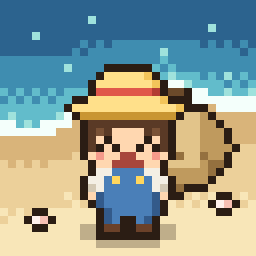
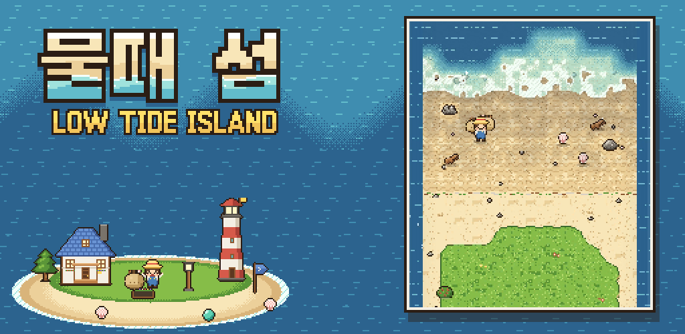
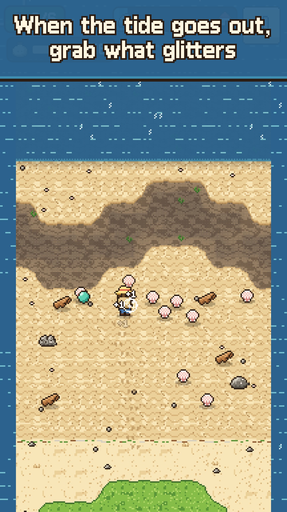
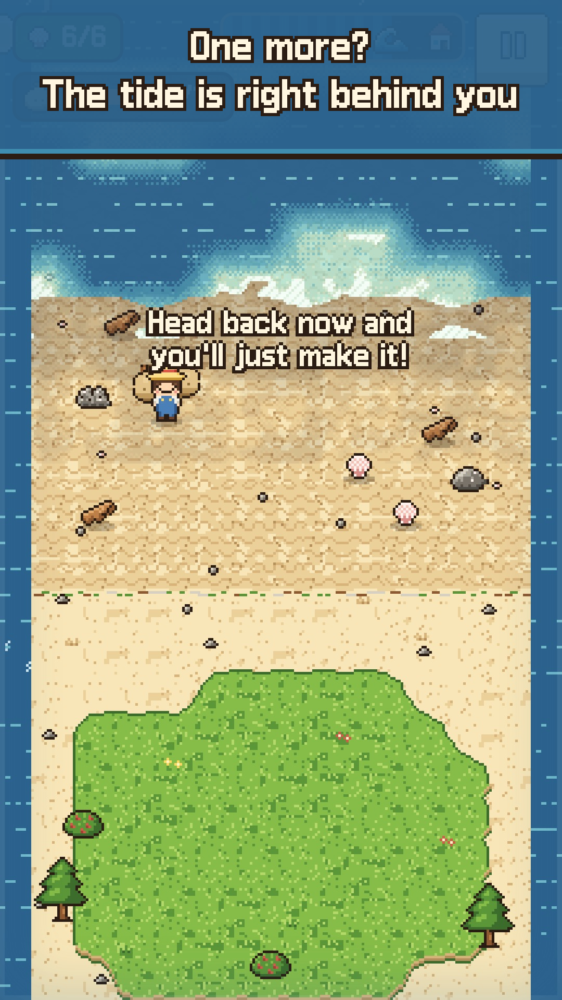
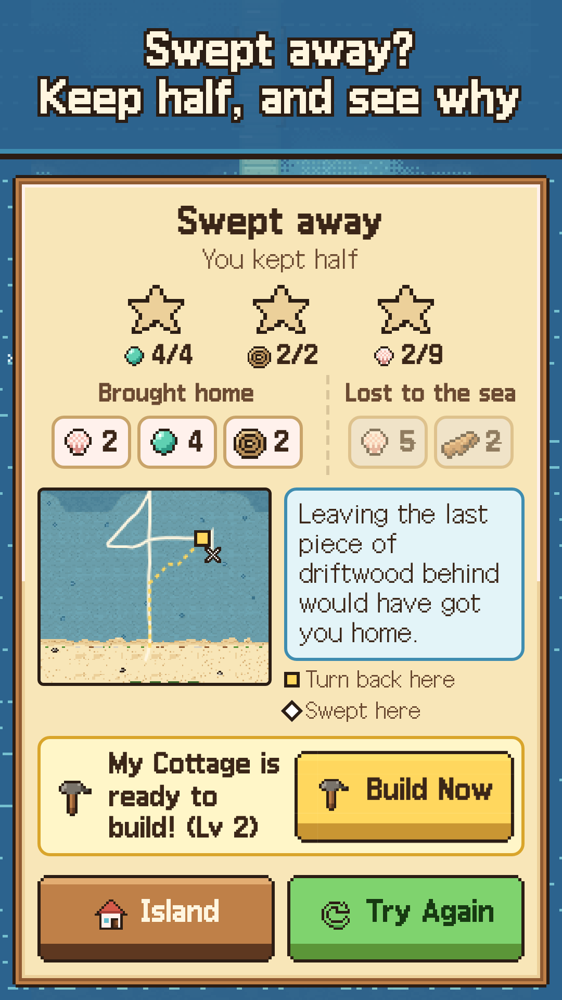
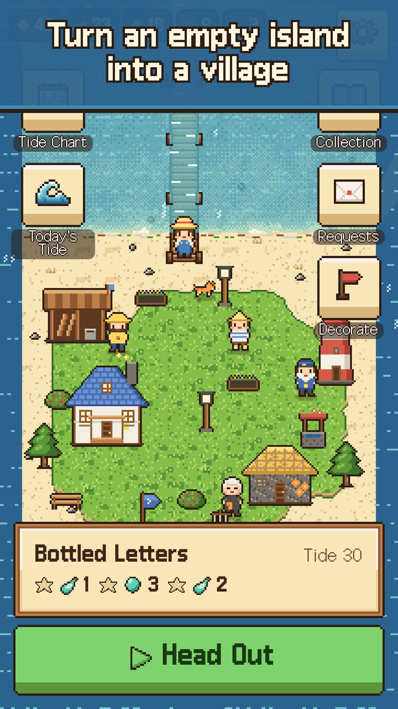
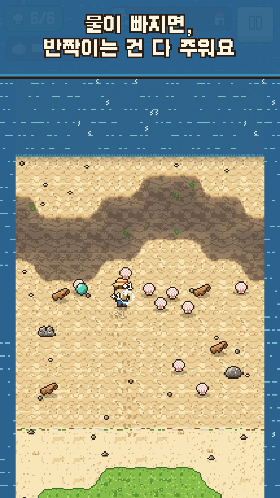
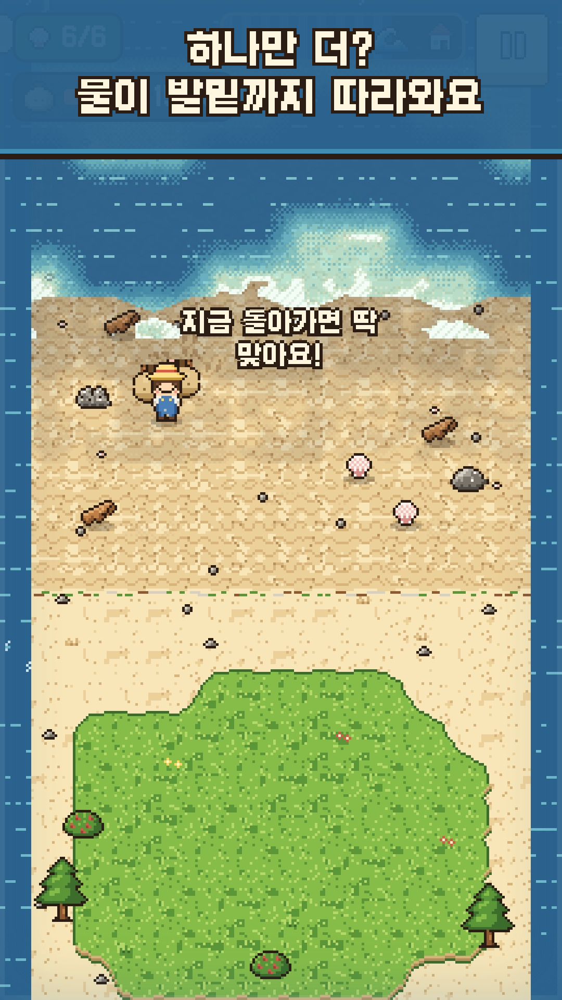
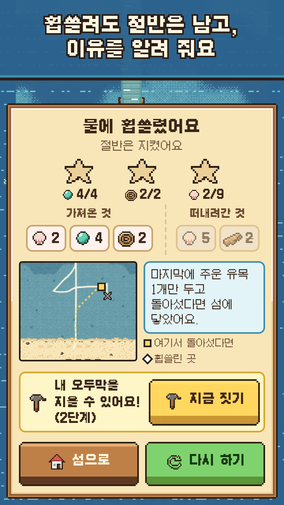
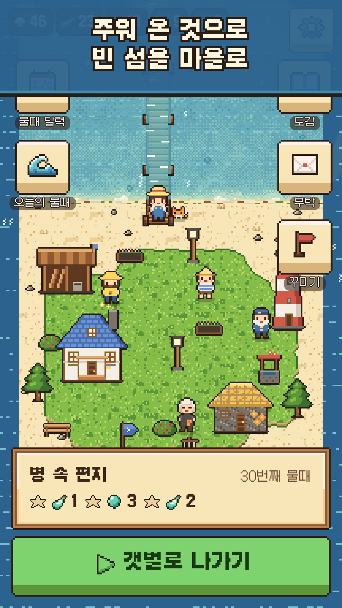

바로 플레이 · Play here
왼쪽 화면에서 바로 플레이할 수 있어요. 화면 어디든 끌어서 걷고, 물건 위를 지나가면 줍습니다. 물이 차기 전에 아래쪽 섬으로 돌아오세요. 새 창으로 열려면 게임 하기.
Play in the frame. Drag anywhere to walk; walk over things to pick them up; get back to the island before the tide does. Open full screen.
진행은 이 브라우저에 저장됩니다(localStorage). Progress is saved in this browser.
트레일러 · Trailer
27.1s · 1080×1920 h264 · 12.7MB · 2 subtitle tracks
27.2s · 1080×1920 h264 · 12.9MB
27.2s · 1080×1920 h264 · 13.3MB
자막 파일 · Subtitle files: trailer.en.srt · trailer.en.vtt · trailer.ko.srt · trailer.ko.vtt
스토어 등록 정보 · Store listing


스크린샷 · Screenshots
















문구 · Text
물때 섬 — 스토어 문구 (한국어)
앱 이름 (30자 이내)
물때 섬
짧은 설명 (Google Play, 80자 이내)
물 빠진 갯벌에서 줍고, 물이 차기 전에 돌아와 빈 섬을 마을로 키우세요.
부제 (App Store, 30자 이내)
하나만 더? 물이 차기 전에!
홍보 문구 (App Store, 170자 이내)
엄지 하나로 갯벌을 달리며 줍고, 발밑까지 따라온 물을 등지고 섬에 닿는 순간. 주워 온 것으로 데크길과 집, 등대를 세워 더 먼 모래톱까지 가 보세요.
자세한 설명
물이 빠졌어요. 반짝이는 조개와 유목, 바다유리가 갯벌에 가득합니다. 하지만 물은 곧 돌아와요. 바깥 바다와 낮은 갯골부터, 눈에 보이게.
하나만 더 주울까, 지금 돌아갈까? 멀리 갈수록 귀한 것이 있고, 자루가 무거울수록 걸음이 느려집니다. 물이 발뒤꿈치까지 따라온 채 섬에 닿는 그 한 걸음, 뒤에서 파도가 부서지고 주워 온 것이 와르르 쏟아집니다.
휩쓸려도 괜찮아요 물에 휩쓸리면 마지막에 주운 것부터 절반을 잃고 섬으로 떠밀려 옵니다. 나머지 절반은 그대로 남아요. 결과 화면이 "마지막에 주운 유목 2개만 두고 돌아섰다면 닿았어요"처럼 실제 기록으로 이유를 보여 주고, 작은 지도에 돌아섰어야 할 곳을 표시해 줍니다.
짓는 만큼 섬이 넓어져요
- 데크길: 갯골을 건너 지난번엔 못 가던 모래톱까지
- 내 오두막: 더 큰 자루
- 뻘배 헛간: 느리던 뻘이 지름길로
- 등대: 안개가 걷히고, 돌아갈 때를 종으로 알려 줌
- 해녀의 집, 장대 쉼터, 그리고 꽃밭·등불·우물 같은 꾸미기
건물 6종 12단계, 꾸미기 6종. 몇 채만 지어도 섬과 다음 판의 길이 눈에 띄게 달라집니다.
오늘도 물때가 바뀌어요
- 손으로 다듬은 물때 40개 (느긋한 판, 생각하는 판, 새로 발견하는 판)
- 날마다 바뀌는 오늘의 물때
- 밤사이 파도가 두고 간 선물, 할머니의 부탁
- 옛 마을의 물건 12가지와 병 속 편지 8통
이렇게 즐겨요
- 세로 화면, 한 손 조작: 화면 어디든 끌어서 이동, 지나가면 자동으로 줍기
- 한 판에 1분이 채 안 걸려요
- 첫날에는 기다리는 시간도, 에너지 제한도 없어요. 지으면 바로 섭니다.
- 광고와 결제가 없어요. 상점도, 유료 재화도 없습니다.
- 인터넷 연결 없이 플레이할 수 있어요.
- 한국어, English
- 색만으로 구분하지 않는 화면(밝기·무늬·진동·글자로 위험을 알림), 진동·음악·효과음 각각 끄기
키워드 (App Store, 100바이트 이내)
갯벌,물때,섬,힐링,픽셀,한손,캐주얼,수집,건설,마을
카테고리
캐주얼 (보조: 시뮬레이션)
연령 등급 참고
폭력·선정성·도박 요소 없음, 광고·결제 없음, 개인정보 수집 없음(분석 이벤트는 기기 안에만 쌓이며 외부로 보내지 않음)
Low Tide Island — Store Listing (English)
App name (30 characters max)
Low Tide Island
Short description (Google Play, 80 characters max)
Grab treasures on the tidal flats, beat the tide home, and build up your island.
Subtitle (App Store, 30 characters max)
One more shell? Mind the tide!
Promotional text (App Store, 170 characters max)
Race across the flats with one thumb, then make it home with the sea at your heels. Build boardwalks, cottages and a lighthouse to reach sandbars further out.
Full description
The tide is out. The flats are full of shells, driftwood and sea glass. But the water is coming back. It creeps in from the open sea and fills the low creeks first, right where you can see it.
One more, or head back now? The best finds lie further out, and every pickup makes your sack heavier and your steps slower. Reach the island with the water at your heels, hear the wave crash behind you, and watch your haul pour out of the sack.
Getting swept is not the end If the sea catches you, you lose half your sack, starting with the last things you picked up, and wash ashore with the rest. The results screen uses your actual run to show what happened, for example: "Leave the last 2 driftwood and you would have made it", with a small map marking where you should have turned back.
Build to go further
- Boardwalk: cross the creeks to sandbars you could not reach before
- My Cottage: a bigger sack
- Mud Sled Shed: the slow mud becomes a shortcut
- Lighthouse: clears the fog and rings a bell when it is time to head back
- Diver's House, the Stilt Hut, and decorations like flower beds, lanterns and a well
6 buildings with 12 upgrades, 6 kinds of decorations. Just a few buildings visibly change the island and the routes you take next time.
A new tide every day
- 40 hand-made tides: easy ones, tricky ones, and ones with something new to find
- A Daily Tide that changes every day
- Gifts the waves leave overnight, and favors for Grandma
- 12 relics of the old village and 8 letters in bottles to find
How it plays
- Portrait, one hand: drag anywhere to walk, walk over things to pick them up
- Each run takes under a minute
- No energy, no build timers on your first day. Buildings go up right away.
- No ads and no in-app purchases. No shop, no premium currency.
- Plays offline
- English and Korean
- Danger is shown with brightness, patterns, vibration and text, not color alone; music, sound effects and vibration can each be turned off
Keywords (App Store, 100 bytes max)
tide,island,beach,cozy,pixel,one hand,casual,collect,build,village
Category
Casual (secondary: Simulation)
Content rating notes
No violence, gambling or mature content. No ads or purchases. No personal data collected (analytics events stay on the device and are not sent anywhere).
기획서 · Plan
펼쳐 보기 · Read
물때 섬 (Low Tide Island) — 기획서
반복할 때마다 고치는 기획서입니다. 맨 아래 변경 이력에 무엇을 왜 바꿨는지, 시도했다가 버린 것을 남깁니다.
1. 한 줄 소개
물이 빠진 갯벌을 엄지 하나로 달리며 줍고, 물이 다시 차오르기 전에 섬으로 돌아와, 주워 온 것으로 빈 섬을 마을로 키우는 세로형 한 손 게임.
2. 누가, 언제, 왜 재미있나
| 누가 | 언제 | 왜 |
|---|---|---|
| 출퇴근길·쉬는 시간에 한 손으로 노는 사람 | 한 판 1분 이내(물때 34~53초) | 판이 짧고, 끝날 때마다 섬에 무언가가 남는다 |
| 아슬아슬한 판단을 즐기는 사람 | 물이 발밑까지 왔을 때 | "하나만 더"와 "지금 돌아가"를 매 순간 스스로 고른다 |
| 꾸미고 둘러보는 걸 좋아하는 사람 | 판이 끝난 뒤 섬 화면 | 빈 섬에 데크길·집·등대가 서고 주민이 들어온다 |
재미의 핵심 순간:
- 줄줄이 줍기 — 반짝이는 조개 줄을 따라 달리면 톡-톡-톡 음이 반음씩 올라가며 자루로 빨려 들어간다(연속 줍기 0.75초 안).
- 하나만 더? — 귀한 것은 멀리, 물이 먼저 들어오는 낮은 곳에 있다. 자루는 무겁고, 물은 보인다.
- 마지막 한 걸음 — 발밑까지 따라온 물을 등지고 섬에 닿는 순간 슬로 모션, 뒤에서 파도가 부서지고 "아슬아슬!" 도장이 찍힌다.
- 쏟아지는 수확 — 자루를 내려놓으면 주운 것이 하나씩 분수처럼 쏟아지고 음이 올라간다.
- 지난번엔 못 가던 곳 — 데크길이 갯골을 건너자, 같은 갯벌에서 고르는 길이 달라진다.
3. 조작
- 끌어서 이동: 화면 어디든 엄지를 대고 끌면 그 방향으로 걷는다(떠 있는 조이스틱, 반경 밖으로 끌면 중심이 따라와 방향 전환이 즉각적). 손을 떼면 멈춘다.
- 자동 줍기: 물건 위를 지나가면 줍는다. 자루가 가득 차면 더 줍지 않고 "가방이 가득!"이 뜬다.
- 섬에 닿으면 끝: 물건을 든 채 섬(마른 모래·풀밭)에 발을 디디면 판이 끝난다.
- 섬 화면에서는 탭: 팻말을 눌러 짓기, 버튼으로 다음 물때.
4. 한 판의 흐름
- 갯벌로 나가기 → 물이 쭉 빠지며 반짝이는 갯벌이 드러난다(1.6초, 탭으로 넘김). 목표가 아이콘으로 뜬다.
- 첫 이동부터 물때가 흐른다. 처음 절반은 물이 멀리서 거의 멈춰 있고(썰물), 뒤로 갈수록 빨라진다(밀물, 물때 곡선 지수 2.2~3.0).
- 물은 바깥(수평선과 양옆)과 낮은 갯골부터 들어온다. 물이 오기 직전의 모래는 젖어서 짙어진다.
- 자루 무게가 찰수록 느려진다(가득 차면 50% 속도). 자루 크기가 캐릭터 등에서 커진다.
- 발이 잠기면 첨벙거리며 느려지고(78%→42%), 깊이가 7이 되면 휩쓸린다. 위험할수록 화면 테두리가 물빛으로 숨쉬고 심장 박동 진동이 온다.
- 귀환: 섬에 닿으면 수확이 쏟아지고 결과 → (지을 수 있으면) 바로 짓기 → 다음 물때.
- 휩쓸림: 가장 나중에 주운 것부터 절반이 떠내려가고 나머지 절반을 안고 섬에 떠밀려 온다. 결과 화면이 실제 기록으로 "마지막에 주운 유목 2개만 두고 돌아섰다면 섬에 닿았어요"를 계산해 보여 주고, 작은 지도에 돌아섰어야 할 곳(■)과 휩쓸린 곳(×), 그때의 물, 돌아오는 길을 그린다.
5. 판단을 만드는 장치 (실제 수치)
| 장치 | 수치 | 판단 |
|---|---|---|
| 거리-가치 | 조개1·유목2 (가까움) → 바다유리3·밧줄3 → 진주8·상자14 (멂) | 가까운 흔한 것 vs 먼 귀한 것 |
| 무게 | 조개·유리·진주 1, 유목·밧줄 2, 상자 5 / 자루 16→20→26→32 | 무거운 걸 집는 순간 돌아오는 시간이 늘어난다 |
| 갯골이 먼저 찬다 | 갯골은 주변보다 24 낮다 | 마른 모래톱보다 돌아오는 길이 먼저 막힌다 |
| 뻘 | 걷는 속도 60% | 뻘 속 물건은 많지만 느리다 |
| 밀물 속도 | 마지막 20%에서 물가가 초당 2.2~3.3칸 전진 | 짐을 진 걸음(초당 약 2.6칸)과 비슷해 "따라온다" |
| 물건이 떠내려감 | 물 깊이 1.6 이상이면 둥둥 떠서 사라짐 | 물가의 반짝임은 지금 아니면 없다 |
6. 성장 — "숫자보다 공간"
| 건물 | 단계 | 다음 판에서 달라지는 것 |
|---|---|---|
| 데크길 | 1~3 | 섬에서 12/28/43칸 나무길. 1단계로 첫 갯골, 2단계로 둘째 갯골, 3단계로 깊은 물길을 건넌다. 데크는 30% 빠르고 갯벌보다 14 높아 먼 끝부터 늦게 잠긴다 → 같은 갯벌에서 더 오래 머물 수 있다 |
| 내 오두막 | 1~3 | 자루 무게 16→20→26→32 |
| 해녀의 집 | 1 | 할머니가 이사 와 매일 부탁 3개(다음 건물에 필요한 것보다 남는 재료를 받고, 다음 건물에 모자란 재료로 답례), 막힐 때 조언 |
| 뻘배 헛간 | 1~2 | 뻘 위 속도 60%→100%→120% (느리던 뻘이 지름길) |
| 등대 | 1~2 | 1: 먼 바다 안개가 걷히고 돌아갈 때 종을 친다 / 2: 종이 울리면 가장 빠른 귀갓길을 불빛으로 비춘다 |
| 장대 쉼터 | 1 | 먼 모래톱의 두 번째 안전지대. 사다리에 닿으면 나룻배가 섬으로 태워 준다 |
꾸미기 6종(꽃밭·등불·벤치·깃발·조개 풍경·우물), 12자리, 놓을 때마다 비용 40%씩 증가 → 끝없이 남는 재료를 쓸 곳.
7. 레벨과 난이도 곡선 (물때 40개, 4장)
| 장 | 물때 | 새로 나오는 것 | 필요한 건물 |
|---|---|---|---|
| 1 앞갯벌 | 1~10 | 1 줍기·귀환 / 2 데크길로 갯골 건너기 / 3 무게 / 4 상자 / 5 뻘 / 6 바다유리 / 7 빠른 밀물 / 8 갈림길 / 9 밧줄 / 10 큰 썰물(진주) | 2부터 데크길 1 |
| 2 모래톱 | 11~22 | 둘째 갯골 너머, 안개(14·17), 넓은 갯골, 병 속 편지 | 데크길 2 |
| 3 먼 모래톱 | 23~33 | 등대의 종, 깊은 물길 너머(27·31·33), 장대 쉼터(28) | 등대 1, 데크길 3, 쉼터 |
| 4 수평선 | 34~40 | 수평선 모래톱, 난파선, 마지막 편지 | 데크길 3 (+36 쉼터, 39 등대 2) |
- 판마다 종류를 섞는다: 느긋하게(easy) / 생각하게(think) / 새로운 발견(discover). 어려운 판 뒤에는 느긋한 판을 둔다(15 → 16, 21 → 22).
- 별 3개 = 목표 1개(완료 조건) + 별 목표 2개. 별은 판을 여러 번 해서 모을 수 있다.
- 매일 바뀌는 오늘의 물때(사리·불가사리·바다유리·빠른 밀물 4종, 날짜로 생성, 데크길 단계에 맞춘 크기).
자동 검증 (tools/levels/validate.mjs)
- 구조: 지도 크기·문자, 데크길 자리의 바위, 바위·바다 위 물건, 목표 수만큼 물건이 있는지.
- 풀이: 시간에 따라 잠기는 지형 위의 경로 탐색(빔 서치)으로 사람 속도 85%로 목표 달성+귀환, 95%로 별 2·3이 가능한지. 하나라도 불가면 실패.
- 긴장 지표: 욕심 봇 4종(가치를 쫓는 무모한/보통, 가까운 것부터, 조심스러운)이 왜 멈췄는지(자루 가득/물), 언제 멈췄는지, 휩쓸렸는지. 1장은 모두 귀환, 2장부터 가치를 쫓는 무모한 봇이 휩쓸리기 시작하도록 맞췄다.
- 오늘의 물때 120일 × 데크길 3단계 = 360개도 같은 방식으로 검증.
막혔을 때 돕는 장치
- 휩쓸린 뒤 결과 화면의 원인 계산과 지도(■ 돌아섰어야 할 곳).
- 같은 물때를 2번 연속 못 깨면 "물 천천히 다시 하기"(이번 판만 물이 15% 천천히) 버튼.
- 해녀의 집이 있으면 할머니의 조언.
- 실패해도 절반은 남아 건물을 지을 수 있고, 건물이 다음 판을 쉽게 만든다.
- 첫 판 뒤에는 데크길 재료가 모자라면 채워 준다(첫 건물 보장).
첫날 이탈 원인 판별 기준
| 신호 (분석 이벤트) | 판단 |
|---|---|
tutorial_complete 전에 session_end | 첫 판 진입·조작 문제 (로딩, 조작 이해) |
같은 level에서 level_fail 3회 이상 후 session_end, cause=greedy 비율 높음 | 레벨 난이도(욕심 함정이 너무 가혹) |
cause=late 비율 높음 | 물때 읽기가 어렵다(시각 단서·종 부족) |
run_end는 성공인데 building_built 없이 이탈 | 메타 동선(짓기 안내) 문제 |
level_complete 직후 이탈, 다음 run_start 없음 | 결과→다음 판 연결 문제 |
첫 판 run_end.seconds가 짧고 items 적음 | 첫 판이 너무 밋밋/짧음 |
판별 지표: D1 잔존, 첫 세션 판 수, 판당 시간, 레벨별 시도·실패·원인, 첫 건물까지 걸린 시간, 별 분포.
8. 메타·경제·재방문
- 재화: 조개·유목·바다유리·밧줄·진주(모두 게임 안에서만 벌고 쓴다). 상자(유리·밧줄·진주·조개 묶음 + 옛 마을의 물건), 유리병(편지), 불가사리(조개 2개).
- 얻는 곳: 물때(주 수입), 밤사이 선물, 오늘의 물때 보상(진주1·유리3), 할머니 답례(그때 모자란 재료).
- 쓰는 곳: 건물 12단계, 꾸미기 12자리(점점 비싸짐), 할머니 부탁(그때 남는 재료).
- 진행 시뮬레이션 (tools/levels/econ.mjs): 계획 기반 플레이어(휩쓸림 8~30%, 하루 12판, 할머니 부탁은 할 수 있으면 다 들어줌)로 120판, 시드 3개. 건물 12단계가 1·4·5·9·13·16·19·22·24·29·34·40판째(시드 1) 지어지고, 6판 넘게 막히는 구간이 없다. 40판 전부는 약 60판째. 사람은 약 1.5배 느리다고 보면 첫날(20~40판) 건물 8~10개·2장 후반, 2~3일째 3·4장과 별 모으기.
- 재방문: 밤사이 선물(연속 접속일 수에 따라 3→10개, 7일째 진주), 오늘의 물때(5개 클리어 후), 할머니 부탁(해녀의 집 후), 도감(상자·병을 처음 찾으면), 별 모으기, 꾸미기(6개 클리어 후), 다 못 지은 건물과 안개 너머 모래톱이 항상 보인다.
- 기능이 열리는 순서: 1판 데크길 → 1클리어 오두막 → 3클리어 해녀의 집·물때 달력 → 5클리어 뻘배 헛간·오늘의 물때 → 6클리어 꾸미기 → 9클리어 등대 → 17클리어 장대 쉼터.
- 첫날 에너지·대기 시간 없음, 건설 즉시. 광고·결제·상점·유료 재화 없음.
9. 아트 방향
- 16px 타일 픽셀 아트, 이중 격자(dual-grid) 오토타일(뻘·모래·마른 모래·풀 각 16조각 + 변형 3개), 외곽선은 짙은 갈색.
- 물은 픽셀마다 계산: 깊이에 따른 6단 색 + 오더드 디더링, 일렁이는 거품선, 물이 오기 직전 젖어 짙어지는 모래, 섬 가장자리의 만조선(해초·나뭇조각).
- 땅·물·캐릭터·물건이 밝기와 모양으로도 구분된다(색각 이상 대응): 모래 밝음, 뻘 어두움, 물은 무늬와 거품선, 물건은 외곽선과 반짝임, 위험은 색이 아니라 테두리 숨쉬기·진동·글자로도 알린다.
- 캐릭터: 밀짚모자·파란 멜빵바지, 걷기 4프레임 × 3방향, 표정 6종(보통·기쁨·힘듦·걱정·놀람·멍함), 만세·허우적·주저앉기. 자루 5단계.
- UI: 양피지·나무 9-slice, 픽셀 한글 글꼴 갈무리(OFL), 이모지 없음, 아이콘 30여 종.
10. 사운드 방향
- 섬: 84BPM F장조, 마림바·칼림바·핑거피킹 기타·패드·셰이커(45.7초 루프).
- 갯벌: 116BPM G장조 기본 레이어(칼림바 아르페지오·플루트·마림바) + 같은 박자의 긴장 레이어(낮은 현 8분음·톰·트레몰로)가 물때와 위험도에 따라 겹쳐진다.
- 효과음 34종: 물건마다 다른 줍기 소리(연속 줍기마다 2반음씩 상승), 젖은 발소리(모래·뻘·물·데크), 등대 종, 파도 부서짐, 휩쓸림, 쏟아지는 수확(음이 올라감), 한숨(안도), 심장 박동, 갈매기.
- 진동: 줍기(6ms) < 무거운 것(18ms) < 위험 심장박동 < 귀환 < 아슬아슬 < 휩쓸림. 설정에서 끔, 미지원 기기에서는 조용히 생략.
11. 범위에서 뺀 것
- 광고·결제·상점·유료 재화 (요청에 따라 없음)
- 실제 조수 데이터·갯벌 생태 재현, 전투, 낚시, 제작 트리
- 낮/밤 시간 변화, 주민 대화 (차기 후보)
12. 지표와 분석 이벤트
모든 호출은 src/platform/analytics.js의 track() 하나를 거친다. 지금은 기기 안 대기열(lowtide.analytics.queue, 최대 300개)에만 쌓이고 밖으로 보내지 않는다. 실제 SDK는 provider.send 한 곳만 바꾸면 된다.
| 이벤트 | 값 | 언제 |
|---|---|---|
first_open | install_id, lang, screen | 설치 후 첫 실행 (설치 지표) |
session_start / session_end | day_index, streak, cleared / seconds, runs, last_screen | 앱을 열 때 / 숨길 때 |
tutorial_step / tutorial_complete | step / seconds_since_install | 첫 이동 / 첫 판 끝 |
run_start / run_end | level, attempt, assist, bag_lv, board_lv / result, seconds, tide_pct, items, weight, furthest, close_call, cause | 판 시작·끝 |
level_reach / level_complete / level_fail | level / stars, attempts / cause(greedy·late), greedy_items | 레벨 도달·완료·실패 |
resource_earn / resource_spend | currency, amount, source / sink | 재화 획득·사용 (판, 선물, 부탁, 건물, 꾸미기) |
building_built / decor_built | building, level, cleared / decor, count | 짓기 |
daily_gift, daily_tide_complete, request_complete | 재방문 장치 | |
assist_offered / assist_used, bell_rung | 막힘 도움, 종 | |
settings_change, perf_downgrade, screen_view | 설정, 느린 기기 자동 경량화, 화면 |
변경 이력
- v0.1 (기획 착수): 첫 건물을 데크길로 정함 — 첫 판 직후 지을 수 있고 다음 판에 바로 "갯골을 건너온다"는 공간 변화를 보여 주기 때문.
- v0.2 (자동 검증 첫 실행): 40판 중 26판이 "목표 불가". 원인은 데크길이 실제로 생기지 않던 버그(배열 이름이
length라length - 1이 NaN). 검증기가 없었다면 2장 이후 전부 막혔을 것. - v0.3 (긴장 부족): 버그를 고치자 모든 봇이 항상 무사 귀환. 갯벌 경사가 가팔라(51줄에 79) 물가가 초당 0.5칸만 움직였고, 데크길은 끝까지 안전한 고속도로였다. → 갯벌을 평평하게(51줄에 43), 밀물을 뒤로 몰고(곡선 2.2~3.0), 데크길을 "갯벌보다 14 높게" 바꿔 먼 끝부터 잠기게 함.
- v0.4 (자루가 먼저 찬다): 그래도 봇이 다 귀환. 원인 분석: 모든 봇이 물이 아니라 자루가 가득 차서 물때 17~48%에 이미 돌아섰다. → 자루 10→16, 걸음 66→56px/s, 물건을 더 많이·넓게 배치(판당 13~28개), 물때 길이 20% 단축(35~55초). 이제 자루는 물때 40~80%에 차고, 돌아오는 길이 밀물과 겹친다. 2장부터 가치를 쫓는 봇이 휩쓸리기 시작.
- v0.5 (경제): 진행 시뮬레이션에서 60판 만에 40판을 다 깨고 조개 345·진주 102가 쌓임 → 건물 비용 2~4배, 꾸미기 12자리·40% 증가. 그러자 유목이 병목(데크길 3·쉼터에서 20~32판 정체) → 후반 비용을 남는 재료(조개·유리) 쪽으로 옮기고, 후반 물때에 유목 추가, 할머니 부탁을 "남는 것을 받고 모자란 것으로 답례"로 바꿈. 정체 구간이 쉼터 11판 하나로 줄었다.
- v0.6 (트레일러 녹화로 본 첫 판): 실제 첫 판을 녹화해 보니 (1) 데크길 끝에서 바다 타일로 걸어 들어가 빠질 수 있었고 (2) 1판의 바다유리가 갯골 바닥에 있어 "하나만 더"가 곧 휩쓸림이 됐다 (3) 종이 늦게 울려 들어도 이미 늦은 경우가 있었다. → 갯벌 안의 바다 타일은 걸을 수 없게, 유리를 갯골 둑으로 옮김, 종을 4.5초 전에 울리고 이미 늦었으면 "서둘러!"로 바꿔 말함.
- v0.7 (아슬아슬 판정): 물이 두 칸 뒤까지 따라왔는데도 "아슬아슬!" 도장이 안 찍혔다. 도착 순간 발이 젖었는지만 봤기 때문. → 최근 2.5초 동안 등 뒤 40px 안에 물이 있었는지도 본다(
closeCall.behindPixels). 녹화한 첫 판에서 도장·슬로 모션·효과음이 제대로 나는 것을 확인. - v0.8 (작은 화면 QA): 자동 UI 점검(잘린 글자, 화면 밖·겹친·작은 버튼)과 사람 눈 점검을 4개 화면 크기 × 2개 언어로 돌림. 360×640에서 휩쓸린 결과의 지도가 스크롤 아래로 숨어 "왜"를 바로 못 봄 → 지도를 '돌아섰어야 할 곳~섬' 구간만 잘라 설명 옆에 두고, 가져온 것/떠내려간 것을 한 줄에. 이제 스크롤 없이 다 보인다. 320px 설정에서 '언어/그래픽' 글자가 버튼에 가려짐 → 줄바꿈. 다 지은 건물 팝업이 "다 지었어요"뿐 → 지금 무엇을 해 주는지 표시. 영어 "You can build the My Cottage" → "My Cottage is ready to build!".
- v0.9 (편안함과 저사양): 휩쓸릴 때 화면 전체가 하얗게 번쩍임 → 청록 파도가 위에서 아래로 덮고 지나가게(눈부심 없음, 동작 줄이기 설정이면 부드러운 페이드). 4~6배 CPU 제한에서 53~58fps 확인, 그래도 느린 기기를 위해 45fps를 3초 못 지키면 이번 세션만 물·파티클을 가볍게(설정은 그대로).
- v1.0 (중반 정체): 진행 시뮬레이션을 다시 돌리자 시드 하나에서 23번째 물때 앞에서 23판, 28번째에서 11~16판을 막혔다. 원인: 등대 1단계가 조개 40개를 요구하는데 할머니 부탁도 늘 조개를 가져가서, 유목·유리는 100개 넘게 남는데 조개만 모자랐다. → 할머니 부탁을 "다음 건물(지금 또는 곧 지을 수 있는 것)에 필요한 양보다 남는 재료를 받고, 가장 모자란 재료로 답례"로 바꾸고, 등대 1단계를 조개 40→30·유리 24→30으로. 결과: 세 시드 모두 6판 넘게 막히는 구간 0, 건물이 3~6판마다 하나씩.
- v1.1 (곁가지 흐름 QA): 선물·부탁·꾸미기·오늘의 물때·일시정지 포기·느린 물 도움·처음부터를 실제 탭으로 돌려 봄. 밤사이 선물 하나가 왼쪽 "오늘의 물때" 버튼 밑에 놓여, 선물을 누르면 버튼이 눌렸다 → 선물을 양옆 버튼과 겹치지 않는 해변 가운데에 펼쳐 놓음. 첫 탭 전에 진동을 부르면 브라우저가 거부하며 오류를 남김 → 첫 탭 전에는 진동을 부르지 않음.
- 버린 아이디어: (1) 물때마다 섬에 내려놓고 다시 나가기 — 귀환이 판의 절정이 되지 못하고 긴장이 흩어져서 버림. (2) 첫 판 휩쓸림 불가 — 위험을 배우지 못해 버리고 대신 "첫 건물 재료 보장"으로 바꿈. (3) 데크길 전체가 만조 직전까지 안전 — 데크 위에서 긴장이 사라져 버림. (4) 별 개수로 장 잠금 — 반복 강요가 될 수 있어 건물 조건만 남김. (5) 트레일러 자막을 화면 아래쪽(70%)에 — 결과 패널·다음 물때 카드와 겹쳐 HUD 바로 아래로 옮김. (6) 오늘의 물때 목표를 고정 수로 — 지도에 실제로 놓인 수보다 많이 요구하는 날이 생겨, 놓인 수에 맞춰 줄이도록 바꿈. (7) 휩쓸림 연출의 흰 화면 전환 — 눈부시고 갑작스러워 파도 전환으로 바꿈.
보고서 · Report
펼쳐 보기 · Read
물때 섬 (Low Tide Island) — 최종 보고서
이 보고서는 무엇을 만들었고, 무엇을 어떻게 확인했고, 무엇을 확인하지 못했는지 적은 것입니다. 실제 휴대폰에서는 한 번도 확인하지 않았습니다. 모든 확인은 이 작업 환경의 헤드리스 Chromium(휴대폰 화면 크기·터치·CPU 제한 흉내)과 자동 도구로 했습니다. 아래 "확인하지 못한 것"을 꼭 함께 봐 주세요.
1. 만든 것
| 무엇 | 어디 |
|---|---|
| 게임 (세로형 한 손, 한국어·영어) | out/index.html (+ game.js, assets/) |
| 쇼케이스 (플레이·영상·스토어 자료·기획서·보고서를 한 곳에서) | out/release/index.html |
| 기획서 (변경 이력·버린 아이디어 포함) | out/release/plan.md |
| 스토어 문구 한국어·영어 | out/release/store/ko.md, en.md |
| 앱 아이콘 512×512 | out/release/icon-512.png |
| 피처 그래픽 1024×500 | out/release/feature-1024x500.png |
| 스크린샷 8장 (한국어 4·영어 4, 1080×1920) | out/release/screenshots/ |
| 홍보 영상 (본편, 자막 트랙 ko/en) | out/release/trailer.mp4 |
| 자막 (ko/en, VTT·SRT) | out/release/subtitles/ |
| 자막을 입힌 언어별 영상 (영어판은 영어 UI로 따로 녹화) | out/release/video/trailer_ko.mp4, trailer_en.mp4 |
| 레벨 에디터 (개발용) | out/tools/editor.html |
| 개발용 빌드 (디버그 패널) | out/dev.html |
게임 한 판: 물이 빠진 갯벌을 엄지로 끌어 걸으며 지나가는 물건을 줍고, 물이 다시 차기 전에 섬으로 돌아온다. 무거울수록 느리고, 멀수록 귀하고, 물은 바깥과 낮은 갯골부터 눈에 보이게 들어온다. 돌아오면 수확이 쏟아지고 그 자리에서 건물을 짓는다. 첫 건물(데크길)은 다음 판부터 갯골을 건너게 해 줘서 갈 수 있는 곳과 길이 바로 달라진다. 휩쓸리면 마지막에 주운 것부터 절반을 잃고 섬으로 떠밀려 오며, 결과 화면이 실제 기록으로 "마지막 유목 1개만 두고 돌아섰다면 닿았어요" 또는 "3초만 일찍 돌아섰다면"을 계산하고 작은 지도에 돌아섰어야 할 곳을 표시한다.
내용: 손으로 다듬은 물때 40개(4장), 날짜로 만들어지는 오늘의 물때, 건물 6종 12단계, 꾸미기 6종 12자리, 옛 마을 물건 12개, 병 속 편지 8통, 할머니 부탁, 밤사이 선물·연속 접속.
2. 사용한 도구와 생성 방식
- 이 환경에는 이미지·영상·음성 생성 모델이 연결되어 있지 않아(사용 가능한 도구를 먼저 확인함), 그림·소리·음악은 모두 코드로 직접 만들었다.
- 그림:
tools/art/*.py— 팔레트 하나(약 60색)로 픽셀을 찍어 캐릭터·타일·건물·아이콘·이펙트를 만들고 아틀라스로 묶음. 로고·아이콘·피처 그래픽은tools/art/brand.py가 같은 팔레트·글꼴·스프라이트로 만듦. - 소리:
tools/audio/*.py— 합성(FM·가산·노이즈·필터)으로 효과음 34종과 음악(섬 1곡, 갯벌 기본+긴장 레이어)을 렌더링해 MP3로. - 글꼴: 갈무리(Galmuri, SIL OFL) 픽셀 한글 글꼴을 쓰는 글자만 잘라 넣음(라이선스 파일 동봉).
- 빌드: esbuild(번들·압축), ESLint(정적 검사), Playwright + Chromium(자동 플레이·스크린샷·녹화), ffmpeg(영상 인코딩·분석), Pillow·NumPy(이미지·오디오 처리).
3. 반복 기록 (가설 → 바꾼 것 → 결과)
자세한 수치는 plan.md 변경 이력에 있다. 요약:
| 회차 | 가설·관찰 | 바꾼 것 | 결과 |
|---|---|---|---|
| v0.1 | 첫 판 직후 공간이 바뀌는 건물이 있어야 다음 판이 달라진다 | 첫 건물을 데크길로 | 첫 판 → 짓기 → 다음 판에 갯골을 건너는 흐름 |
| v0.2 | 자동 검증기 첫 실행 | — | 40판 중 26판 "목표 불가" → 원인: 데크길이 생기지 않던 버그. 수정 후 해결 |
| v0.3 | 봇이 늘 무사 귀환 → 긴장이 없다 | 갯벌을 평평하게, 밀물을 뒤로 몰기(곡선 2.2~3.0), 데크길을 먼 끝부터 잠기게 | 물가가 초당 0.5칸 → 2~3칸, 그래도 귀환률 높음 |
| v0.4 | 봇이 물이 아니라 자루가 차서 일찍 돌아선다 | 자루 10→16, 걸음 66→56, 물건 더 많이·넓게, 물때 20% 짧게 | 자루가 물때 40~80%에 참, 2장부터 욕심 봇이 휩쓸리기 시작 |
| v0.5 | 경제: 60판 만에 끝, 재화가 남아돎 → 유목 병목 | 비용 재조정, 남는 재료를 쓰는 곳(꾸미기·할머니 부탁) | 진행 정체 구간이 1곳(쉼터 11판)으로 |
| v0.6 | 실제 첫 판 녹화: 데크 끝 바다로 걸어 들어감, 1판 유리가 갯골 바닥, 종이 늦음 | 바다 타일 통행 불가, 유리를 둑으로, 종 4.5초 전 + "서둘러!" | 녹화에서 "하나만 더 → 종 → 달려서 아슬아슬 귀환"이 그대로 나옴 |
| v0.7 | 물이 2칸 뒤까지 왔는데 "아슬아슬" 판정이 안 남 | 최근 2.5초 등 뒤 40px 안 물도 판정 | 녹화한 첫 판에서 도장·슬로·효과음 확인 |
| v0.8 | 작은 화면 QA: 휩쓸린 결과의 지도가 스크롤 아래, 320px 설정 글자 가림 | 지도를 필요한 구간만·설명 옆에, 가져온/잃은 것을 한 줄에, 설정 줄바꿈, 다 지은 건물 효과 표시 | 360×640·320×568에서 스크롤 없이 다 보임, 자동 점검 문제 0 |
| v0.9 | 휩쓸릴 때 흰 화면 번쩍임이 눈부심, 저사양 걱정 | 청록 파도 전환, 45fps 미만 3초면 세션 동안 자동 경량화, 지은 뒤 연출 탭으로 건너뛰기 | 아래 성능 수치 |
| v1.0 | 진행 시뮬레이션: 한 시드에서 23번째 물때 앞 23판 정체(조개만 모자람, 할머니 부탁이 조개를 가져감) | 부탁을 "남는 것을 받고 모자란 것으로 답례"로 실제 계산, 등대 1단계 조개 40→30·유리 24→30 | 시드 3개 모두 6판 넘는 정체 0 (전: 23판·11~16판), 건물 3~6판마다 |
| v1.1 | 곁가지 흐름(선물·부탁·꾸미기·오늘의 물때·포기·도움·처음부터)을 탭으로 점검 | 선물이 왼쪽 버튼 밑에 놓여 탭이 버튼으로 감 → 해변 가운데로, 첫 탭 전 진동 호출 막기 | 11개 항목 모두 통과(ko 360×640, en 320×568), 콘솔 오류 0 |
4. 요구 항목별 점검 결과
표기: 확인함 = 이 환경에서 도구로 직접 확인 / 구현함(미확인) = 코드는 있으나 실제 기기·환경에서 동작을 보지 못함.
[1] 기획서
- 확인함:
plan.md에 한 줄 소개, 핵심 재미, 조작, 한 판 흐름, 판단 장치(실제 수치), 성장, 레벨 곡선, 메타·경제·재방문, 아트·사운드 방향, 범위에서 뺀 것, 지표, 변경 이력 v0.1~v1.1, 버린 아이디어 7개.
[2] 손맛과 실패의 이해
- 확인함(녹화 영상과 스크린샷으로): 연속 줍기마다 음이 올라가고(콤보), 무거운 물건은 소리·진동이 다르고, 아슬아슬 귀환에 슬로 모션·파도 부서짐·도장·수확 쏟아짐이 나온다. 성공 크기에 따라 다르다(보통 귀환 < 아슬아슬, 별 개수만큼 별 소리).
- 확인함: 휩쓸린 결과에 원인 문장(욕심/늦음)과 지도(내 길, 돌아섰어야 할 곳 ■, 휩쓸린 곳 ×, 그때의 물, 집으로 가는 길)를 실제 기록으로 계산해 보여 준다(
res.why_greedy,res.why_late,screens.js minimap). 영어·한국어 모두 화면 캡처로 확인. - 확인함: 연출은 탭 한 번으로 넘어간다 — 도착 연출에서 결과까지 2.5초 → 탭하면 0.3초, 결과의 숫자 올라가기는 탭하면 바로 최종값, 지은 뒤 연출도 탭하면 즉시 끝나고 그 탭으로 팝업이 열리지 않음(
tools/qa/skipcheck.mjs등). 휩쓸림 연출도 같은 코드(world.hurry)로 넘어가지만 따로 재지는 않았다.
[3] 온보딩·난이도·레벨·에디터
- 확인함: 첫 실행은 읽을 것 없이 바로 물이 빠지는 첫 판으로 시작, "끌어서 걸어요" 표시는 첫 이동 뒤 사라짐. 장마다 한 번에 하나씩 새 요소(데크길 → 무게 → 상자 → 뻘 → 유리 → 빠른 밀물 → 갈림길 → 밧줄 → 큰 썰물 → 안개 → 종 …).
- 확인함: 레벨은 판마다 별도 파일(
src/data/levels/L01.json~L40.json), 코드와 분리. - 확인함: 자동 검증
node tools/levels/validate.mjs --daily— 40/40 통과, 오늘의 물때 360/360 통과. 구조(지도·물건 위치·목표 수), 풀이 가능성(시간에 따라 잠기는 지형에서 사람 속도 85%로 목표+귀환, 95%로 별 3개), 봇 4종의 결과. 봇이 휩쓸린 비율: 1장 1/40, 2장 14/48, 3장 16/44, 4장 11/28 (1장은 거의 안전, 2장부터 욕심을 부리면 위험). - 확인함: 판 종류를 섞음(느긋하게/생각하게/새 발견), 어려운 판 뒤 쉬운 판.
- 확인함: 막힘 도움 — 결과 화면의 원인·지도, 같은 판 2번 실패 시 "물 천천히 다시 하기"(15% 느리게), 할머니 조언, 첫 건물 재료 보장.
- 확인함: 첫날 이탈 판별 기준과 지표(
plan.md7·12절). - 확인함: 레벨 에디터(
out/tools/editor.html) — 목록, 지도 편집(지형 칠하기·높이·물건 끌어 놓기·물때 시간 스크럽), 속성 패널이 한 화면에, 즉시 검증(경로 표시), 시험 플레이(게임으로 넘겨 바로 그 판 실행,testplay-check.mjs), 파일 가져오기/내보내기.editor-check.mjs오류 없음. - 확인함: 진행 시뮬레이션(
npm run econ, 시드 3개 × 120판) — 6판 넘게 막히는 구간 0, 건물 12단계가 1·4·5·9·13·16·19·22·24·29·34·40판째(시드 1), 40판 전부는 약 60판째. 사람이 1.5배 느리다고 보면 첫날(20~40판) 건물 8~10개, 2~3일째 3·4장·별·오늘의 물때로 하루 이상 즐길 거리.
[4] 메타·경제·재방문 (광고·결제 없음)
- 확인함: 광고·결제·상점·광고 버튼·유료 재화가 없다 (코드·문구 검색, 화면 전수 캡처).
- 확인함: 재방문 장치 — 밤사이 선물(연속 접속일에 따라 늘어남, 7일째 진주), 오늘의 물때(4가지 날씨), 할머니 부탁(매일), 도감, 별, 꾸미기, 단계적 해금(1판 데크길 → 1클리어 오두막 → 3클리어 해녀의 집·달력 → 5클리어 헛간·오늘의 물때 → 6클리어 꾸미기 → 9클리어 등대 → 17클리어 쉼터). 다음 날 재실행 시 연속 접속 2일로 올라가는 것 확인(
first-session.mjs, 시계를 하루 앞당겨 재실행). - 확인함: 메타가 코어를 돕는다 — 건물 효과가 모두 다음 판의 공간·판단을 바꿈(데크길: 갯골 건너기, 오두막: 자루, 헛간: 뻘 속도, 등대: 안개·종·불빛 길, 쉼터: 먼 모래톱의 안전지대).
- 확인함: 결과 화면에서 바로 "지금 짓기" → 짓고 → "갯벌로 나가기"로 다음 판까지 이어짐.
- 첫날 에너지 제한·건설 대기 시간 없음(즉시 지음).
- 확인함: 곁가지 흐름을 실제 탭으로(
tools/qa/flows.mjs) — 밤사이 선물 줍기(모든 선물이 버튼에 가리지 않음), 할머니 부탁 들어주기, 꾸미기 놓기, 오늘의 물때 시작·완료, 일시정지에서 포기 2번 → "물 천천히 다시 하기" 제안 → 느린 물로 시작, 설정의 "처음부터" → 진행 삭제 후 첫 판. 한국어 360×640·영어 320×568 모두 11/11 통과, UI 점검 문제 0, 콘솔 오류 0.
[5] 로그인·클라우드·분석
- 구현함(미확인): 로그인·클라우드 저장은 교체 가능한 자리(
src/platform/account.js, 게스트 ID, 꺼져 있음). 팝업을 띄우거나 플레이를 막지 않는다. - 확인함: 분석 이벤트가 하나의
track()으로 모이고 기기 안 대기열에만 쌓임(외부 전송 없음). 첫 세션 자동 플레이에서first_open,tutorial_complete,run_start,run_end,level_reach,level_complete,resource_earn,resource_spend,building_built가 기록되는 것 확인. 목록은plan.md12절. - 확인함: 팝업이 플레이 중에 끼어들지 않음(선물은 섬 화면의 짧은 알림+배지로, 판 중에는 어떤 팝업도 열리지 않음).
[6] 그림
- 확인함: 한 팔레트의 2D 픽셀 아트로 통일(게임 화면은 한 픽셀 크기), 아이콘 30여 종 구분됨, UI 문자열·코드에 이모지 없음(검색: 디버그 패널의 ★ 하나만, 개발용).
- 확인함: 에셋 구조 검사(
tools/art/build.py: 크기, 투명 배경, 팔레트 밖 색, 애니메이션 프레임 크기 일치) 문제 0. 눈 점검은 화면 캡처로. - 확인함: 캐릭터 대기·걷기 4프레임×3방향, 표정 6종, 만세·허우적·주저앉기, 자루 5단계, 이펙트(물보라·먼지·반짝임·꽃잎·파도 부서짐·고리), 이중 격자 오토타일.
[7] 소리·진동
- 확인함: 섬 음악, 갯벌 음악(기본+물때·위험도에 따라 겹치는 긴장 레이어), 효과음 34종(물건마다 다른 줍기 소리, 바닥마다 다른 발소리 등). 트레일러 오디오 측정: 통합 −14.1 LUFS, 트루 피크 −1.0 dBFS. (게임 안 소리를 사람 귀로 들어 본 것은 아님 — 아래 '확인하지 못한 것')
- 확인함: 앱을 숨기면 오디오가 멈추고 돌아오면 다시 재생(
visibilitychange흉내로suspended → running확인). - 구현함(미확인): 진동 패턴 13가지(줍기 6ms, 무거운 것 18ms, 심장 박동, 귀환, 아슬아슬, 휩쓸림 90+160ms 등 세기와 길이가 다름), 설정에서 끄기,
navigator.vibrate가 없는 기기(iOS Safari 등)에서는 조용히 건너뜀. 실제 진동은 확인 못 함.
[8] UI/UX
- 확인함: 자동 UI 점검(
tools/qa/audit.mjs: 잘린 글자, 화면 밖 버튼, 겹친 버튼, 40px 미만 터치 대상)을 320×568, 360×640, 390×844, 430×932 × 한국어·영어 모든 화면(섬, 팝업 7종, 건물 2종, 판 중, 휩쓸림, 결과, 일시정지)에서 실행 → 문제 0 (처음 실행에서 나온 잘림·가림 문제를 고친 뒤). - 확인함: 노치·다이내믹 아일랜드·홈 인디케이터(위 59px·아래 34px 흉내)에서 모든 버튼이 안전 영역 안.
- 확인함: 팝업 제목·닫기 버튼은 목록을 끝까지 스크롤해도 그대로(달력·도감·꾸미기).
- 확인함: 버튼 연타 방지(탭 가드), 같은 팝업 두 번 열림 방지(팝업 키).
- 확인함: 카메라가 가는 쪽을 더 보여 준다 — 나갈 때는 캐릭터를 화면 64% 높이에(앞의 갯벌과 물이 보이게), 돌아올 때는 38% 높이에(앞의 섬과 뒤따라오는 물이 보이게). 엄지는 화면 어디에 대도 되므로 캐릭터 아래쪽에 두게 되고, HUD는 맨 위 한 줄뿐이다(스크린샷·녹화로 확인).
- 확인함: 숫자는 정수로만, 효과 설명의 수치는 데이터(
balance.json,buildings.json)에서 바로 가져와 표시(예: 자루 26 → 32).
[9] 한국어·영어
- 확인함: 모든 화면 문자열이
src/data/i18n/ko.json,en.json두 파일에만 있음, 키 집합 동일, 자리표시자 일치. 기기 언어를 따르고 그 외 언어는 영어로. 설정에서 바꾸면 즉시 적용(first-session.mjs로 확인). - 확인함: 두 언어 모두 위 4개 화면 크기에서 넘침·잘림 0.
[10] 성능·접근성
- 확인함: 세로 한 손 조작(화면 어디든 끌기, 떠 있는 조이스틱).
- 확인함: 색만으로 구분하지 않음 — 땅·물·위험을 밝기·무늬·거품선·진동·글자로도 표시. 실제 판 화면에 제1·2·3색각 이상 시뮬레이션(Machado 2009)을 적용해(
tools/qa/cvd.py) 바다·거품선·모래·뻘·풀이 모두 구분되는 것을 눈으로 확인했고, 명도 차(L*)는 바다/마른 모래 33~39, 거품선/젖은 모래 22~26, 젖은/마른 모래 16~17, 뻘/젖은 모래 30~31. 약한 곳: 얕은 물과 젖은 모래는 명도 차가 1~7뿐이라 둘 사이의 흰 거품선과 청·황 색차에 기대고 있다. 실제 색각 이상 사용자 테스트는 못 함. - 확인함: 운영체제의 "동작 줄이기" 설정이면 화면 흔들림을 1/4로, 휩쓸림 전환을 부드러운 페이드로.
- 확인함(헤드리스 Chromium, 360×640·DPR 2, 30번째 물때 플레이 중):
- CPU 제한 없음: 60fps, 스크립트 1.3ms/프레임(고화질), 0.7ms(배터리 절약)
- 4배 제한: 58fps, 프레임 33ms 초과 0.8%
- 6배 제한: 고화질 53fps(그 동안 CPU 93% 사용), 배터리 절약은 30fps로 그리며 CPU 64%
- 14배 제한: 17fps → 자동 경량화가 켜지는 것 확인
- 확인함: 첫 로딩에 필요한 파일 약 295KB(HTML·글꼴 포함 51KB, JS 211KB, 그림 33KB). 소리 2.7MB는 화면이 뜬 뒤 따로 불러옴. 로컬 서버에서는 페이지가 열리자마자 로딩 화면이 사라짐(실제 네트워크 속도에서의 로딩 시간은 미측정).
- 확인함: 그래픽 설정은 즉시 적용, 배터리 절약은 30fps 제한+물 계산 격 프레임.
- 확인함: ESLint 경고·오류 0,
file://로 열어도 게임 동작. - 확인함: 출시 빌드를 http로 열면 서비스 워커가 게임 파일 23개를 캐시하고, 네트워크를 끊고 다시 열어도 게임이 시작됨(
tools/qa/swcheck.mjs). 영상·출시 자료는 캐시하지 않음.
[11] 개발용 도구
- 확인함: 디버그 패널(
out/dev.html, 출시 빌드index.html에는 없음 —__DEV__빌드 상수로 제거): 재화 지급, 레벨 이동·클리어, 날짜 넘기기, 자동 플레이. - 확인함: 밸런스 수치는
src/data/balance.json, 건물 비용은buildings.json에 모여 있음.
[12] 출시 자료
- 확인함: 스토어 문구 2개(ko·en, 글자 수 제한 안: 짧은 설명 41자/80자, 영어 80/80), 아이콘 512×512 PNG, 피처 1024×500 PNG(알파 없음), 스크린샷 8장 1080×1920(9:16).
- 확인함: 영상 — 아래 표. 첫 1초부터 실제 첫 판(물 빠짐 → 줄줄이 줍기 → 무거워지는 자루 → 물이 들어옴 → 하나만 더 → 달려서 아슬아슬 → 수확이 쏟아짐 → 데크길 짓기 → 다음 판에 데크길로 갯골 건너기 → 섬이 마을이 되는 단계). 모든 장면은 게임을 실제로 플레이한 화면이다(자동 조작, 가상 시계로 느리게 돌려 1080×1920으로 녹화). 기다리는 구간만 잘랐고 화면을 꾸며 넣지 않았다. 마을 단계 장면은 해당 진행 단계의 저장 데이터로 게임을 열어 녹화했다.
- 확인함: 영상 검토 — 0.5초 간격 프레임 시트로 장면·자막 위치·타이밍을 확인하고 문제(자막이 결과 창과 겹침, 자막이 장면보다 먼저 나옴, 아슬아슬 판정 누락, 영어 자막 넘침, 로고 잘림)를 고친 뒤 다시 만들었다.
- 확인함: 쇼케이스
release/index.html— 바로 플레이(iframe), 영상 3개(자막 트랙), 아이콘·피처·스크린샷, 스토어 문구(탭), 기획서·보고서. 데스크톱·휴대폰 폭에서 깨진 그림·가로 스크롤 없음.
| 파일 | 길이 | 크기 | 영상 | 소리 | 자막 |
|---|---|---|---|---|---|
trailer.mp4 (본편, 한국어 화면) | 27.1초 | 12.7MB | H.264 High, 1080×1920, 30fps | AAC 160kbps, 통합 −14.1 LUFS, 트루 피크 −1.0 dBFS | 자막 트랙 2개(kor·eng, mov_text) + subtitles/trailer.{ko,en}.{vtt,srt} |
video/trailer_ko.mp4 | 27.2초 | 12.9MB | 같음 | 같음 | 한국어 자막을 화면에 입힘 |
video/trailer_en.mp4 (영어 화면으로 따로 녹화) | 27.2초 | 13.3MB | 같음 | 같음 | 영어 자막을 화면에 입힘 |
장면 구성(본편 기준): 0~6초 첫 판 — 물이 빠지고 조개를 줄줄이 주우며 자루가 무거워짐 / 6~9초 물이 돌아서고 갯골 둑의 바다유리 "하나만 더" / 9~14.9초 종소리, 물을 등지고 달려 섬에 닿음, "아슬아슬!" 도장, 수확이 쏟아짐 / 14.9~16.2초 결과(별 3개) / 16.2~20초 결과에서 바로 데크길 짓기 / 20~23초 다음 판, 새 데크길로 갯골을 건넘 / 23~24.9초 섬이 마을로 자라는 4단계 / 24.9~27초 로고. 자막(ko·en)은 게임 기록(줍기·종·도착 효과음 시각)에 맞춰 자동으로 시간이 정해진다.
[13] 최종 확인
- 확인함(헤드리스, 터치 이벤트로 실제 입력): 새로 설치한 상태로 작은 화면(360×640, 한국어) 8판, 큰 화면(430×932, 영어) 6판을 끝까지 플레이 — 로딩 → 첫 판 → 결과 → 첫 건물 → 다음 판 … → 설정 → 언어 바꾸기 → 앱 전환(소리) → 다음 날로 시계를 옮겨 다시 열기(연속 접속 증가) → 재시작 후 저장 유지. 콘솔 오류 0, UI 점검 문제 0.
5. 일부러 하지 않은 것
- 광고·결제·상점·유료 재화 — 요청대로 없음.
- 실제 로그인·클라우드 저장·분석 전송 — 외부 서비스 계정이 없어 교체 가능한 자리만 만들고 끔. 아무 데도 보내지 않는다.
- 푸시 알림 — 첫날 이탈 방지에 쓸 수 있지만 권한 팝업이 플레이를 방해할 수 있고 웹 빌드에서 확인할 방법이 없어 넣지 않음.
- 기간 한정 이벤트 — 매일 바뀌는 "오늘의 물때"(4종)로 대신함. 서버 없이 운영되는 이벤트 일정은 넣지 않음.
- 네이티브 앱 포장(APK/IPA) — 이 환경에서 빌드·서명할 수 없어 PWA(설치·오프라인 캐시)까지만.
- 낮/밤, 주민 대화, 낚시 등 — 범위 밖(
plan.md11절).
6. 알려진 문제
- 휴대폰 실기에서 터치 지연·발열·배터리 소모를 재지 못했다. 헤드리스 Chromium은 캔버스를 소프트웨어로 그리므로 실제 GPU가 있는 폰과 수치가 다를 수 있다.
- iOS Safari는
navigator.vibrate가 없어 진동이 나지 않는다(의도대로 조용히 건너뜀). - 브라우저 정책상 첫 터치 전에는 소리가 나지 않는다(첫 터치에서 오디오를 깨움).
- 저장은 브라우저 저장소(localStorage)라 브라우저 데이터를 지우면 진행이 사라진다(클라우드 저장 자리는 있으나 꺼짐).
- 레벨 검증은 봇 기준이다. 사람의 실제 실패율·이탈률은 출시 후 분석 이벤트로 확인해야 한다(판별 기준은
plan.md). - 자동 플레이로 한 첫 세션은 계획된 경로로 움직여 사람보다 잘한다(8판 모두 귀환). 사람이 처음 하면 2장부터 더 자주 휩쓸릴 것으로 예상한다.
- 모든 건물을 다 지은 뒤(시뮬레이션 기준 약 40판째)에는 재료가 계속 쌓인다. 그 뒤의 소비처는 꾸미기 12자리(놓을수록 비싸짐)뿐이라, 오래 즐기려면 다음 업데이트에서 소비처(꾸미기 추가, 섬 확장 등)가 필요하다.
- 영상의 "섬이 마을이 되는" 장면은 실제 플레이를 이어서 찍은 것이 아니라, 진행 단계별 저장 데이터로 게임을 열어 찍었다.
7. 확인하지 못한 것 (실기기·외부)
- 실제 안드로이드·아이폰에서의 실행, 노치 기기의 실제 안전 영역, 홈 화면에 설치한 PWA, 앱 전환·잠금 후 복귀(이 환경에서는
visibilitychange를 흉내 내서만 확인), 실제 진동 세기, 스피커·이어폰 음량, 저사양 실기기의 프레임·발열, 느린 네트워크에서의 첫 로딩 시간. - 게임 안 음악·효과음을 사람 귀로 듣고 평가하지 못했다(파형·음량 측정과 스펙트럼으로만 확인).
- 스토어 실제 등록 심사(문구·그림 규격은 공개된 규격에 맞췄지만 제출해 보지는 않음).
- 사람 플레이테스터의 반응, 색각 이상 사용자의 구분 가능 여부.
8. 다시 돌려 보는 법
npm install
npm run art && npm run audio && npm run build # 그림·소리·빌드
npm run validate # 레벨 40 + 오늘의 물때 360 검증
npm run econ # 경제 진행 시뮬레이션
npm run lint # ESLint
node tools/qa/first-session.mjs --w 360 --h 640 # 처음 하는 사람처럼 터치로 플레이
node tools/qa/flows.mjs --lang en-US --w 320 --h 568 # 선물·부탁·꾸미기·오늘의 물때·포기·도움·처음부터
node tools/qa/skipcheck.mjs # 탭으로 연출 넘기기
node tools/qa/screens.mjs --w 320 --h 568 --lang en-US # 모든 화면 캡처 + UI 점검 (--notch)
node tools/qa/perf.mjs --throttle 4 # 저사양 흉내 프레임 측정
node tools/qa/swcheck.mjs && node tools/qa/filecheck.mjs && node tools/qa/missing.mjs # 오프라인·file://·빠진 파일
node tools/video/trailer-capture.mjs [--en] && python3 tools/video/compose.py # 영상
python3 tools/art/brand.py && python3 tools/release/screenshots.py && node tools/release/showcase.mjs